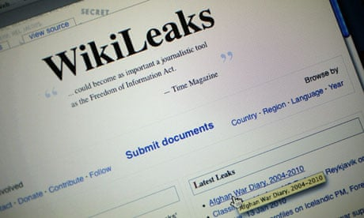

Web.py
While working at Infogami Aaron wasn't happy with the functinality of Python web frameworks that were availble. His solution was to write web.py.The web.py foundation is an opensourse code group to maintain this module.
Semantic Web
Although in his blogs and numerous essays where he criticised the inefficenies of the W3C as. Aaron was a regular speaker at events to promote the idea of a Semantic web, where information was well ordered and pages are easier to reference by mechiens.
RDF/XML
While part of Network Working Group he authored a memo with an outline RDF an extention to XML to help transmit data about media on Pages.RDF allow was proposed to allow developers the ability to organise meta data about pictures video and images to make sites clearer to web crawlers
RSS
RSS is a web standard which allows for information about changes to a website to be transmitted to followers of a feed.Say, you follow a news provider, you don't want to check the page every 5 mins for updates on a breaking story then use RSS to push updates directly to you. The development of RSS in the early 2000s is credited with the growth of social media sites like Facebook, Twitter and, Snapchat.
Although, RSS is now seen as a quaint feature, many web browsers have native support to collect feeds. A 14 year old Swartz joined a controversial working group on a major fork of the RSS poject stated by Netscape, a year later this working group delivered RSS 1.0.
Dead Drop
.Aaron Swartz wrote Dead Drop in 2007 after realizing that members of the public needed a way to speakout and provide the evidance.Sucure Drop was completed in 2012 from the frame work laid down by Aaron Swart in Dead Drop.
At this time Wiki leaks controversial head Juilan Assanage could be facing a trail for releasing goverment documents relating to the "IRAQ WAR LEAKS" Secure Drop the sytem used by wiki leaks is still seen as one of the best anonymous document summistion platform available.